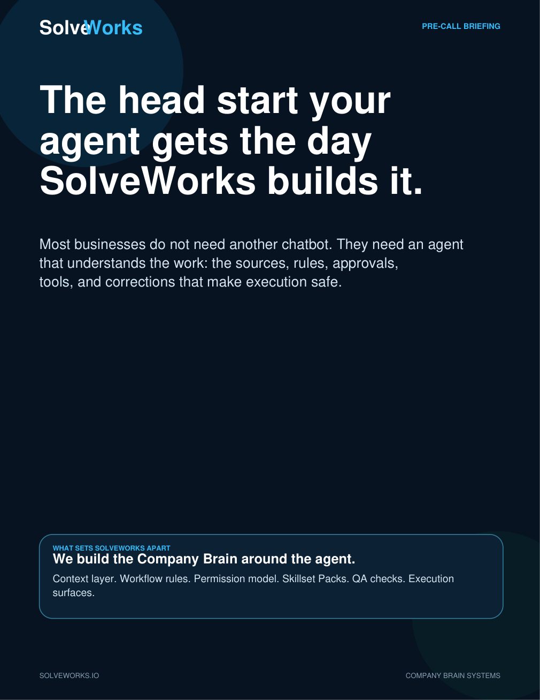
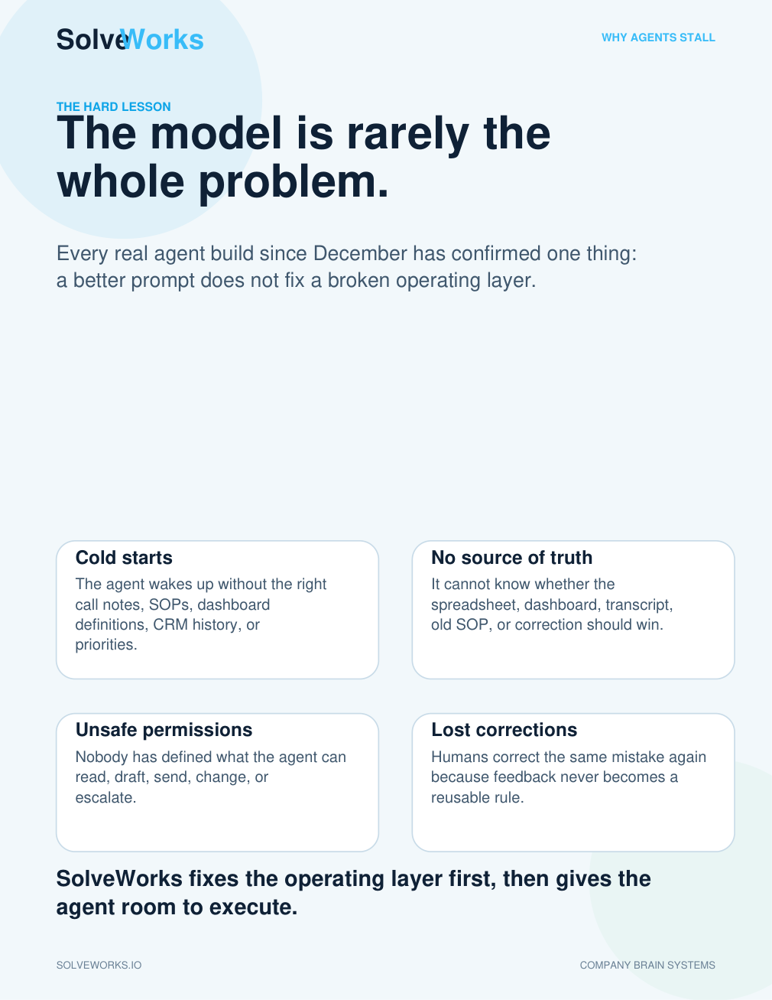
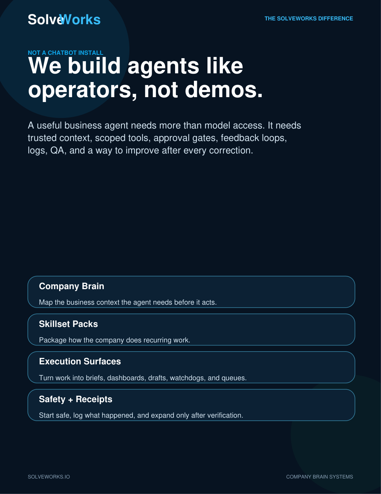

When we first started building agents, the obvious question was whether the model could produce useful work. Could it summarize a call? Draft a follow-up? Explain a dashboard? Pull together a brief? Help with a proposal?
That question still matters, but it is no longer the main one. The real question is whether the agent can operate inside a business with enough context, restraint, security, evidence, and repeatability that the owner can start trusting it.
That shift changed how we think about agent builds. A useful agent is not a smarter chat window. It is a business operating layer around a model.
The Company Brain is the business context, trusted sources, workflow memory, permission model, and reusable operating knowledge the agent needs before it acts.
Why this is worth sharing now
There are two audiences for this.
If you already have an agent, or you are knowledgeable enough to build one, this should give you a sharper standard. You may recognize the same failure modes we kept running into: brittle memory, vague tools, duplicate responders, missing logs, unclear source truth, no approval ladder, demos that looked good but could not be trusted in production.
If you have not started yet, this should make the path clearer. You do not need to become an AI architect before you get value. You need a first business-level agent that is set up correctly, hardened from the start, and scoped around one real workflow you can actually use.
Talk to SolveWorks about your first agent
What changed in our thinking
The biggest evolution was realizing that “agent quality” is mostly not one thing. It is a stack.
Early thinking
Can the model understand the task and produce a good answer?
Current thinking
Can the agent operate with the right business context, tools, security, approvals, logs, and verification?
Early risk
A weak response, generic output, or a hallucinated answer.
Current risk
An agent that sounds finished but is connected to the wrong source, wrong permissions, wrong runtime, or no proof.
That is why our builds now start with the operating layer, not just the prompt.
What makes an agent business-level?
A business-level agent is not defined by how impressive the demo looks. It is defined by whether the system around it is safe, useful, and verifiable.
It knows the job
The agent has a defined role, workflow, success criteria, and escalation path.
It knows the business
It has access to the right context, not every random note or stale memory.
It knows the boundaries
Read-only, draft-only, approval-gated, and autonomous actions are separated on purpose.
It leaves receipts
Important work is backed by logs, checks, source links, smoke tests, and proof of what changed.
The Company Brain became the missing layer
The model can reason, but the business still has to decide what context matters, which source wins, what the agent can touch, which corrections should become rules, and where outputs should land.
We call that layer the Company Brain. It is the operating memory and workflow intelligence around the agent.
Capture
Calls, SOPs, docs, dashboards, CRM notes, decisions, and corrections.
Retrieval
Only the facts needed for the job in front of the agent, not a noisy memory dump.
Source truth
Rules for which system wins when data conflicts.
Permissions
What the agent can read, draft, send, change, or escalate.
Feedback loops
Corrections become future rules, not lost chat threads.
Execution
Briefs, dashboards, follow-ups, watchdogs, tasks, and approvals.
Hardening is not a later phase
A lot of agent projects treat hardening, security, and QA as something to clean up after the prototype works. We think that is backwards.
The first version does not need every possible capability. But it should be built to the right standard from the start: correct identity, scoped access, clear boundaries, durable runtime, isolated customer context, safe defaults, and evidence when it does work.
This is the standard that lets a business start using an agent without wondering whether the foundation is going to collapse underneath it.
Skillset Packs turned repeated work into reusable capability
Another major lesson: if an agent has to rediscover the workflow every time, the system is not learning. The work needs to become reusable.
Skillset Packs are the repeatable operating knowledge behind the agent: rules, prompts, runbooks, examples, tool commands, QA checks, and escalation paths. They are the difference between an agent improvising and an agent following the way the company actually does the job.
For people who already have agents
If you already have an agent, the best use of this article is as an audit lens. Ask whether your current system has the operating pieces that make an agent trustworthy.
- Does it know which source of truth wins?
- Are memory, skills, and temporary task progress separated?
- Are write actions approval-gated?
- Can you prove what the agent did, not just read what it claimed?
- Is there exactly one intended responder for any live bot or channel?
- Are customer contexts, credentials, and delivery targets isolated?
- Does every repeated correction improve a durable skill, rule, or checklist?
Most agent issues are not “the model is bad.” They are operating-layer issues. Fix those and the same model often becomes dramatically more useful.
For companies that have not started yet
You do not need an agent that does everything. You need one high-value workflow that is frequent, bounded, and useful enough to change the week.
The right first agent usually starts as read-only or draft-only. It prepares the briefing, drafts the follow-up, checks the dashboard, watches the exception, summarizes the call, organizes the next step, or routes the decision. Then, once the workflow is proven, permissions can expand carefully.
Executive or owner briefing
Calendar, inbox, meeting notes, dashboard exceptions, priorities, and decisions.
Sales follow-up
Call summary, buyer pain, next steps, CRM note, approved follow-up draft.
Dashboard analyst
Freshness checks, KPI explanations, anomalies, and recommended actions.
Ops watchdog
Recurring checks, stale tasks, order exceptions, and escalations.
The point is not to install “AI everywhere.” The point is to get a business-level agent set up correctly so the company starts learning what practical AI leverage feels like.
The first engagement should create a working foundation
A good first build should give the agent a head start and give the business confidence. That means the proposal and setup are built around the workflow we map together: what the agent reads, what it produces, what needs approval, what tools it can use, how it is verified, and how it improves.
When there is a fit, SolveWorks builds the first agent with the operating layer included from the beginning. The operating layer is not added later as an afterthought.
Download the companion brief
The article above is the public-facing field guide. The PDF companion is available for pre-call sharing or forwarding.
Download PDF Talk to SolveWorks about your first agentPDF preview


